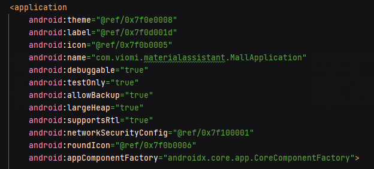

排查 Launcher AppStore 静默安装 App 失败的问题
Launcher 里的 AppStore 模块会根据服务端的配置安装/卸载 APP，当然用户也可以手动安装 AppStore 里的 APP
某天收到反馈，一个要上线的 APP【食材管理】静默安装总是失败，以往都是正常的
静默安装是指 AppStore 自动在后台安装，无须用户手动点击安装
静默安装是通过广播
android.intent.action.SILENCE_INSTALL实现的，由 ROM 鉴权和实现
本地在 YUNMI.21FACE-1.0.UniVer.071320_V8.1 绿联 6810 Android 5.1 还原，我首先通过查询关键字 SILENCE_INSTALL 没找到有用的日志
D/ActivityThread: BDC-Calling onReceive: intent=Intent { act=android.intent.action.SILENCE_INSTALL flg=0x10 cmp=com.android.settings/.SilenceInstallApkReciver (has extras) }, receiver=com.android.settings.SilenceInstallApkReciver@14f877ad
D/ActivityThread: BDC-RECEIVER handled : 0 / ReceiverData{intent=Intent { act=android.intent.action.SILENCE_INSTALL flg=0x10 cmp=com.android.settings/.SilenceInstallApkReciver (has extras) } packageName=com.android.settings resultCode=-1 resultData=null resultExtras=null}然后搜索包名 com.viomi.materialassistant 找到 PackageManager 的日志，看起来它的日志是有用的；但是它的日志里并没有错误出现，只是记录了安装过程中的各个阶段
况且我也不了解安装的具体流程，PMS 不用想就知道代码量巨大，直接从代码里找日志出现的地方不显示，所以决定跟正常的安装流程日志进行对比
I/PackageManager: init_copy idx=0: InstallParams{3488adaa file=/storage/emulated/0/viomi/com.viomi.materialassistant-debug-v20001.apk cid=null}
I/PackageManager: Trying to bind to DefaultContainerService
I/PackageManager: onServiceConnected
I/PackageManager: onServiceConnected: true, 0
I/PackageManager: mcs_bound
I/PackageManager: startCopy UserHandle{0}: InstallParams{3488adaa file=/storage/emulated/0/viomi/com.viomi.materialassistant-debug-v20001.apk cid=null}
I/PackageManager: Apk copy done
I/PackageManager: Checking for more work or unbind...
I/PackageManager: Posting delayed MCS_UNBIND
D/PackageManager: installPackageLI: path=/data/app/vmdl885444489.tmp
I/PackageManager: Start parsing apk: null
I/PackageManager: Parsing done for apk: null
W/PackageManager: installPackageLI
I/PackageManager: mcs_check
I/PackageManager: mcs_check(true, 1)
I/PackageManager: mcs_unbind
I/PackageManager: calling disconnectService()
I/PackageManager: disconnectService: false这是一个正常的安装日志，第 10 行就是差异开始的地方，正常的安装会将 APP 复制到 /data/app/packagename 并进行 dexopt 生产本地代码，异常的流程完全没有这些后续操作且也没有异常日志出现
看来只好 show me the code，关键字是 PackageManagerService 和 installPackageLI
I/PackageManager( 980): init_copy idx=0: InstallParams{23c92659 file=/data/local/tmp/com.viomi.materialassistant-debug-v20001.apk cid=null}
I/PackageManager( 980): Trying to bind to DefaultContainerService
I/PackageManager( 980): onServiceConnected
I/PackageManager( 980): onServiceConnected: true, 0
I/PackageManager( 980): mcs_bound
I/PackageManager( 980): startCopy UserHandle{-1}: InstallParams{23c92659 file=/data/local/tmp/com.viomi.materialassistant-debug-v20001.apk cid=null}
I/PackageManager( 980): Apk copy done
I/PackageManager( 980): Checking for more work or unbind...
I/PackageManager( 980): Posting delayed MCS_UNBIND
D/PackageManager( 980): installPackageLI: path=/data/app/vmdl1595486398.tmp
I/PackageManager( 980): Start parsing apk: null
I/PackageManager( 980): Parsing done for apk: null
D/PackageManager( 980): manifestDigest was not present, but parser got: ManifestDigest {mDigest=0d,c6,33,12,73,a9,31,fa,52,ea,e1,61,0a,f0,71,10,59,9a,49,67,f9,54,1a,1b,92,7e,cb,f1,b9,6c,c0,c6,}
D/PackageManager( 980): Renaming /data/app/vmdl1595486398.tmp to /data/app/com.viomi.materialassistant-1
I/PackageManager( 980): Start installation for package: null
D/PackageManager( 980): installNewPackageLI: Package{33bad6f6 com.viomi.materialassistant}
I/PackageManager( 980): Linking native library dir for /data/app/com.viomi.materialassistant-1
D/installd( 211): do_linklib : com.viomi.materialassistant /data/app/com.viomi.materialassistant-1/lib/arm 0
I/PackageManager( 980): Perform pre-dex opt for package: com.viomi.materialassistant
I/PackageManager( 980): Running dexopt on: /data/app/com.viomi.materialassistant-1/base.apk pkg=com.viomi.materialassistant isa=arm vmSafeMode=false
I/PackageManager( 980): Dexopt done on: com.viomi.materialassistant
W/PackageManager( 980): Skipping provider name com.viomi.materialassistant.provider (in package com.viomi.materialassistant): name already used by com.viomi.materialassistant
D/PackageManager( 980): New package installed in /data/app/com.viomi.materialassistant-1
W/PackageManager( 980): Unknown permission com.android.vending.CHECK_LICENSE in package com.viomi.materialassistant
W/PackageManager( 980): Unknown permission android.permission.SYSTEM_OVERLAY_WINDOW in package com.viomi.materialassistant
W/PackageManager( 980): Unknown permission com.google.android.c2dm.permission.RECEIVE in package com.viomi.materialassistant
I/PackageManager( 980): Installation done for package: null
V/PackageManager( 980): + starting restore round-trip 3
V/PackageManager( 980): token 3 to BM for possible restore
V/PackageManager( 980): BM finishing package install for 3
I/PackageManager( 980): mcs_check
I/PackageManager( 980): mcs_check(true, 1)
I/PackageManager( 980): mcs_unbind
I/PackageManager( 980): disconnectService: false
I/PackageManager( 980): calling disconnectService()
V/PackageManager( 980): Handling post-install for 3
I/PackageManager( 980): mcs_unbind
I/PackageManager( 980): calling disconnectService()找到 PackageManagerService.java 文件，切换到 android-5.1.0_r5，搜索 installPackageLI 能找到如下代码片段
正常流程能走到 manifestDigest was not present 但异常流程在此之前被 return 中断了，那么就从这行代码往前找找看是什么逻辑触发 return
private void installPackageLI(InstallArgs args, PackageInstalledInfo res) {
final int installFlags = args.installFlags;
String installerPackageName = args.installerPackageName;
File tmpPackageFile = new File(args.getCodePath());
boolean forwardLocked = ((installFlags & PackageManager.INSTALL_FORWARD_LOCK) != 0);
boolean onSd = ((installFlags & PackageManager.INSTALL_EXTERNAL) != 0);
boolean replace = false;
final int scanFlags = SCAN_NEW_INSTALL | SCAN_FORCE_DEX | SCAN_UPDATE_SIGNATURE;
// Result object to be returned
res.returnCode = PackageManager.INSTALL_SUCCEEDED;
if (DEBUG_INSTALL) Slog.d(TAG, "installPackageLI: path=" + tmpPackageFile);
// Retrieve PackageSettings and parse package
final int parseFlags = mDefParseFlags | PackageParser.PARSE_CHATTY
| (forwardLocked ? PackageParser.PARSE_FORWARD_LOCK : 0)
| (onSd ? PackageParser.PARSE_ON_SDCARD : 0);
PackageParser pp = new PackageParser();
pp.setSeparateProcesses(mSeparateProcesses);
pp.setDisplayMetrics(mMetrics);
final PackageParser.Package pkg;
try {
pkg = pp.parsePackage(tmpPackageFile, parseFlags);
} catch (PackageParserException e) {
res.setError("Failed parse during installPackageLI", e);
return;
}
// Mark that we have an install time CPU ABI override.
pkg.cpuAbiOverride = args.abiOverride;
// 终于找到你！虽然 PackageManager.INSTALL_FAILED_TEST_ONLY 是 -15，但是实际上并没有把 int 输出到 logcat
// 所以日志就出现了奇怪的一行 installPackageLI 不带任何错误代码！
String pkgName = res.name = pkg.packageName;
if ((pkg.applicationInfo.flags&ApplicationInfo.FLAG_TEST_ONLY) != 0) {
if ((installFlags & PackageManager.INSTALL_ALLOW_TEST) == 0) {
res.setError(INSTALL_FAILED_TEST_ONLY, "installPackageLI");
return;
}
}
// setError 干了什么，往下可以看到会把错误输出到 logcat，然而异常流程也没有这行日志，所以不是这里 return 的
try {
pp.collectCertificates(pkg, parseFlags);
pp.collectManifestDigest(pkg);
} catch (PackageParserException e) {
res.setError("Failed collect during installPackageLI", e);
return;
}
// 异常流程并没有出现 Comparing manifests: 这行日志，所以并不是在这里 return 的
/* If the installer passed in a manifest digest, compare it now. */
if (args.manifestDigest != null) {
if (DEBUG_INSTALL) {
final String parsedManifest = pkg.manifestDigest == null ? "null"
: pkg.manifestDigest.toString();
Slog.d(TAG, "Comparing manifests: " + args.manifestDigest.toString() + " vs. "
+ parsedManifest);
}
if (!args.manifestDigest.equals(pkg.manifestDigest)) {
res.setError(INSTALL_FAILED_PACKAGE_CHANGED, "Manifest digest changed");
return;
}
} else if (DEBUG_INSTALL) {
final String parsedManifest = pkg.manifestDigest == null
? "null" : pkg.manifestDigest.toString();
Slog.d(TAG, "manifestDigest was not present, but parser got: " + parsedManifest);
}
...
}
class PackageInstalledInfo {
public void setError(int code, String msg) {
returnCode = code;
returnMsg = msg;
Slog.w(TAG, msg);
}
public void setError(String msg, PackageParserException e) {
returnCode = e.error;
returnMsg = ExceptionUtils.getCompleteMessage(msg, e);
Slog.w(TAG, msg, e);
}
public void setError(String msg, PackageManagerException e) {
returnCode = e.error;
returnMsg = ExceptionUtils.getCompleteMessage(msg, e);
Slog.w(TAG, msg, e);
}
}看来安装流程就是在这里被中断了：APK 带有 FLAG_TEST_ONLY 标识，但安装时缺少参数 INSTALL_ALLOW_TEST
原来如此，我记得安装这种 test only 的包时 adb 要带上 -t 选项，也就说 android.intent.action.SILENCE_INSTALL 时没有开启 -t 选项
if ((pkg.applicationInfo.flags&ApplicationInfo.FLAG_TEST_ONLY) != 0) {
if ((installFlags & PackageManager.INSTALL_ALLOW_TEST) == 0) {
res.setError(INSTALL_FAILED_TEST_ONLY, "installPackageLI");
return;
}
}
把 AppStore 上的 APK 下载下来看下，果然 testOnly=”true”，看来是不小心上传错安装包了（这里是测试环境，所以不要求放 release 包，debug 包也是可以的）